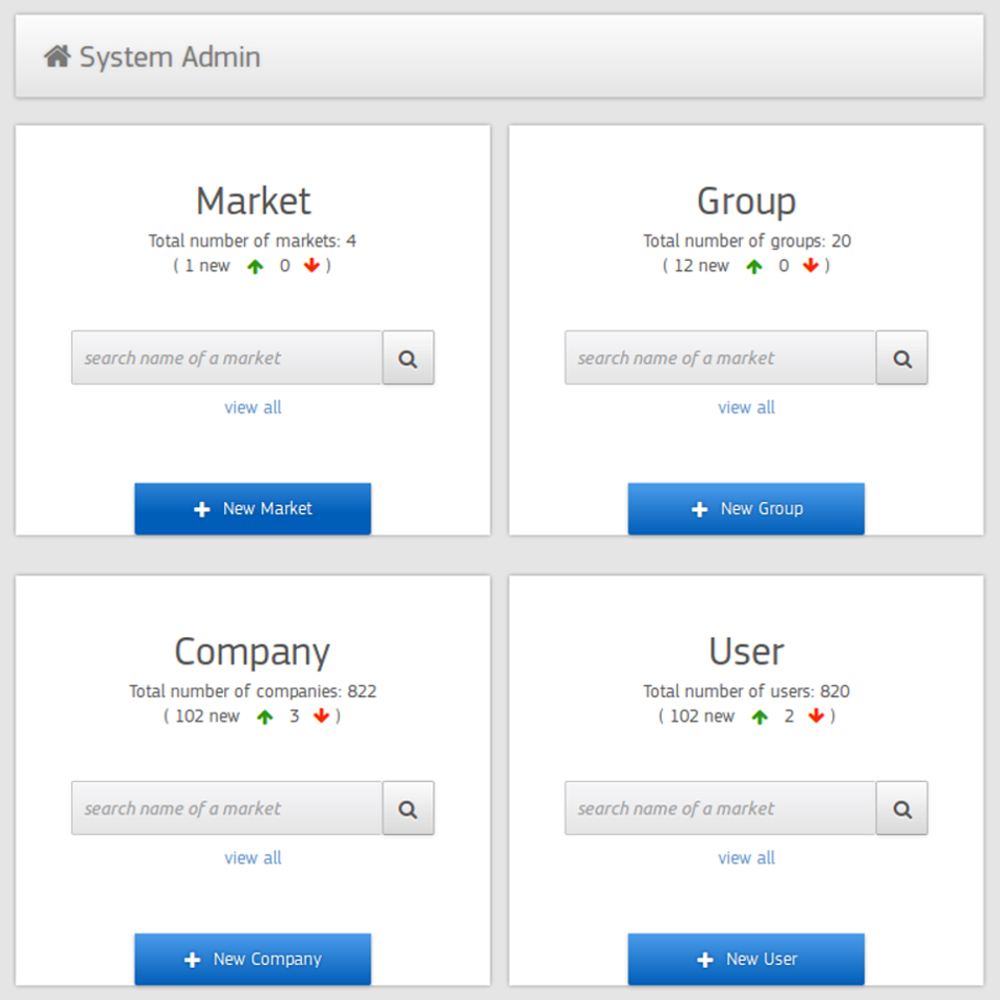

Before Design - Phase 1: Reduce Problem
Explanation
After a long meeting with product manager, the first thing I did was to ask to reduce the structure complexity. I gave product manager two suggestions:
Suggestion 1： Merge Market and Chain. The reason is: Market and Chain are 90% similar and for most markets there is only 1 chain for all users.
Suggestion 2: Hide Accounts from UI. Because Travel Agent and Account are same from user (Administrator) point of view. The concept behind it is: You can login with “One Account”, and then you can switch between different “Travel Agents” which belongs to Different “Travel Agencies”, and all those Travel Agents has one Account (credentials)
So when create a new “Agent”
= 1. create a new “Account” +assign it to a “Travel Agency”
= 2. select existing “Account” + assign it to a “Travel Agency”
Why not just Delete this “Account” layer from surface (it is still in database, just not visible for
end-user anymore). In this case user (Administrator) don’t need to think anymore: Should I create an Account
or an Agent? what’s the difference again?
Finally, suggestion 2 was taken. Suggestion 1 was refused, because market and chains are two marketing concept, both are needed for sales team. And we decide to make one more small change, use general names instead of travel industry terminology, ex “Travel Agencies”, “Chains” etc. To sum up, the finally structure look like this:
Market -> Group -> Company -> User
Later, I took a step forward, I make a structure map, combined the required functions and the 4-layer structure into one map, which became the base that I worked on.
Before Design - Phase 2: Identify Problem
Explanation
For me, design always equals to solving problems, users’ needs are the problems, providing what they want is to solve the problems. So here comes to my 2nd-base graph: Who are my target users, what are their problems.
Before Design - Phase 3: Expectations of the solution
Explanation
Naturally, after you got the problems, you want solutions. And before you find out the best solutions, usually, you have some expectations how the solution might look like. Draw them down fast, just to keep a record. So that afterwards, you can use it to verify your final solution. And it is my 3rd-base graph:

During Design - phase 1: Low-fi design
Explanation
Landing Page: Based on the “who-wants-what”, problem identifying graph, I knew that, System Admin wants 3 things: create market/group/company/user, search any of them and edit any of them. So for the landing page, I decided to give System Admin all functions in a straightforward way. By one look, System Admin understand that, they can create any roles they want, or search for anything they want to edit. (note: for monitoring users, because it was not a major function, it has been postponed. )

Search Functionality: Search functionality is a tricky one. From the landing page, it is simple, you know what you want to search and go to the desired search field. But for the search result, how can I show the search result in a structured way. And also, how could it be easy for user to start a new search in the search result page. Search with the 4 layer structure is not as easy as Google search, displaying everything in a list as Google does, wont have System Admin filter out what they want, and give them a overview the huge and complex user system they are managing. There are two ways to do show search result in a structured way: 1. Structure search results 2. Structure search queries
I made two sketch based on those two proposals. And then I imaged some work scenarios which System Admin might encounter with, applied them with the two solutions. I found out that, structure search queries are easier for making a new search and have a cleaner design.

Verify the low-fi design: According to the 3rd-base graph which was created during preparation phase, there are some expectations of the final solution. To avoid redesign during the HTML click dummy creating stage, I did a mapping between the expectations and the low-fi to ensure that all problems are solved.

During Design - phase 2: HTML click dummy
Explanation
From my opinion, after having an idea or an image how the design should look like, creating HTML click-dummy usually goes quite smoothly. Of course you will find out that something in the wireframe which do not fit with real data and you need to do some adjustments, but the main direction won't change much in most of cases.
The biggest issue I had in this design task is that there were too many things you could do with photos and too much info of photos you should show to users, plus photos themselves are colorful objects If I put everything on the surface like my original idea in the wirefames, it looks overwhelmed. That is also the main reason why I abandoned the card view before. But even for the list view, which has much more space, it looked crowded when I made most functionalities visible together with photos. I really want to give users an impression that, they can have a rest here, enjoy looking at beautiful images, take a pause from boring daily works. So finally, I decided to use a hover effect to hide most functions, and give user a clean view when they land on this page.
Comparison between the old designs and new ones:
Old Design : List view of all media
New Design : List view of photos and pdf
Note: In the functional bits, all problems which are toggled in the old design are fixed in the new one. It has bigger images, no hidden info, more white spaces etc. All things you can do with the photos/files are more straight forward now. Just one click, no need to explore
Old Design : Collection view
New Design : Collection view
Note: The old collection view has almost no design, it was probably a rush work to make it on production as soon as possible. The new design intend to give user a hint what this collection is without looking at the title, and it uses same design methodology with the design of photo list: more straight forward functionalities, relatively bigger images, and more text information.
After Design: Polishing/refining after testing
Explanation
After finished the design, I gave the click-dummy to a small group of people who use the old digital system daily, and let them play with it freely. The feedback was good. Not many changes during this phase were needed, only some small things were pointed out, for example, the color of the heart icon and the check icon were not bright enough. When a image had too many red/green colors, they were not obvious enough to identify. So I increased the contrast between the background grey and icons colors.
Some bigger changes came after the development. With real data, performance were not as good as it showed in click-dummy. Sometimes, it is easier to improve it with better design than spending weeks kicking off the technical bottle nick For example, "marking as favorite" button, in click-dummy, users see feedback immediately, but in real world it usually takes 2 to 4 seconds to get response from server. So during these 2 to 4 seconds, users doesn't know what is happening. And they might click again and again on the icon, which of course causes troubles. To avoid the confusion, I add an small animation to the icon. After clicking, the icon will spin slowly until we get the response from server. Animation clearly tells users that the icon is already being clicked. At the same time, it brings fun. I found out that some users did enjoy clicking on it again and again just to see the animation.